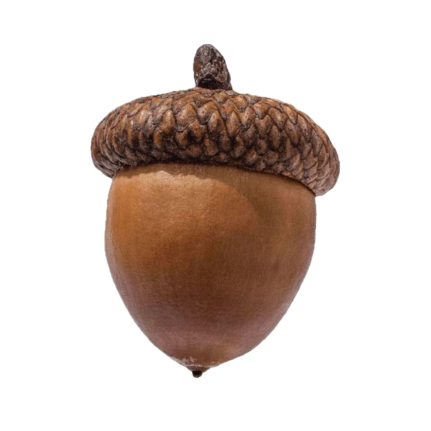
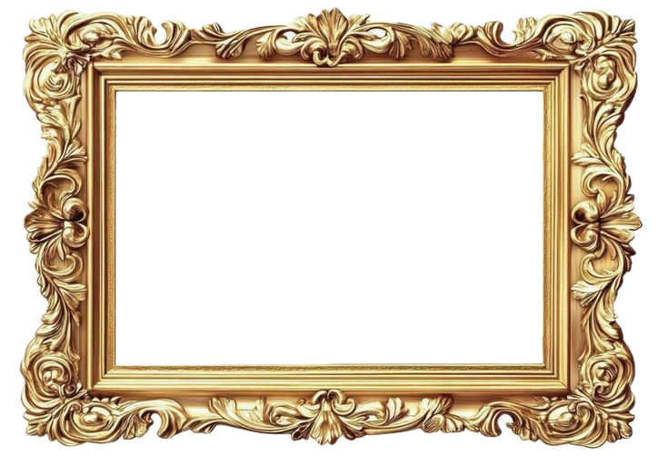
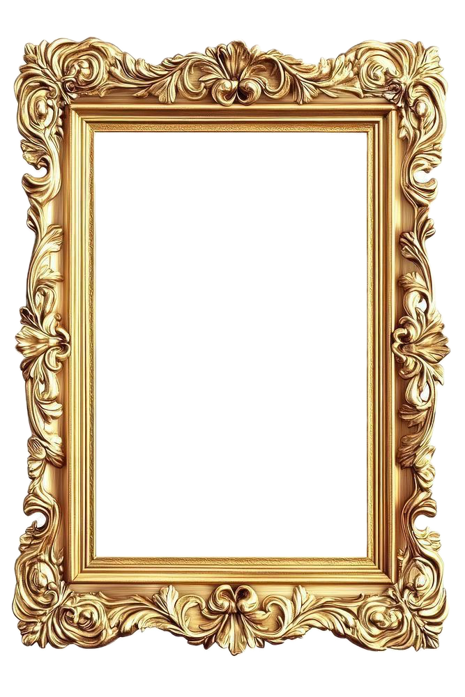
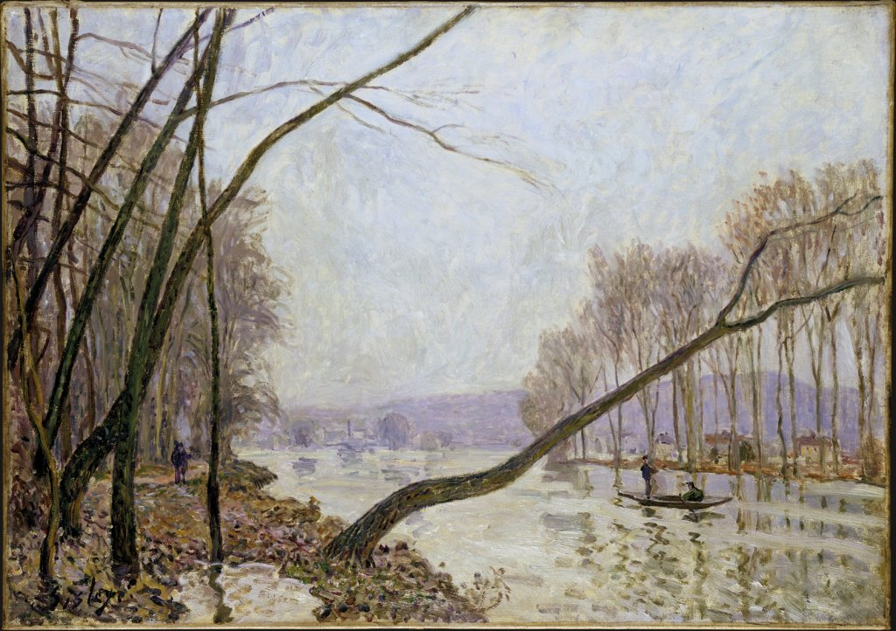
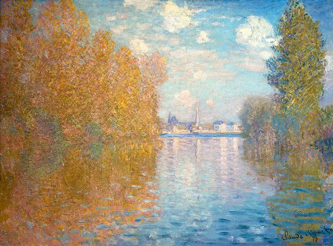

AN AUTUMN EXHIBITION 2026
Five artists, five perspectives, one season.
Autumn is more than a change in weather. It is a season of transformation, filled with changing colors, shifting light, and quiet emotions.
Through five paintings, this collection explores how different artists observe and interpret the same season. Each painting shows a unique perspective on autumn.


01 / OBSERVATION
Camille Pissarro 1870
Pissarro captures a quiet landscape with bare trees, soft colors, and everyday life in a French village.
The painting shows how ordinary moments in nature can express the peaceful atmosphere of autumn.


02 / COLOR & LIGHT
Claude Monet 1873
Golden autumn trees are reflected in the river, capturing the changing colors of light with each season.
Monet uses warm colors and soft reflections to show how light transforms ordinary landscapes.

03 / ATMOSPHERE
Alfred Sisley 1876
Sisley expresses the peaceful atmosphere of an autumn riverbank through calm colors and delicate brushwork.
This tranquil scene shows the stillness and serenity that nature brings as the seasons change.


04 / EMOTION
Winslow Homer 1877
The figure surrounded by fallen leaves evokes the quiet and contemplative atmosphere characteristic of autumn.
Homer does not merely depict natural scenery; he connects the seasons to human experience and emotion.

05 / EXPRESSION
Vincent van Gogh 1889
The vivid yellow leaves and expressive brushwork reveal the energy and movement of autumn.
Through vivid colors and dynamic lines, Van Gogh transforms an ordinary tree into an emotional expression of the season.
END OF THE COLLECTION
From peaceful landscapes to expressive colors, each painting reveals a different side of autumn.